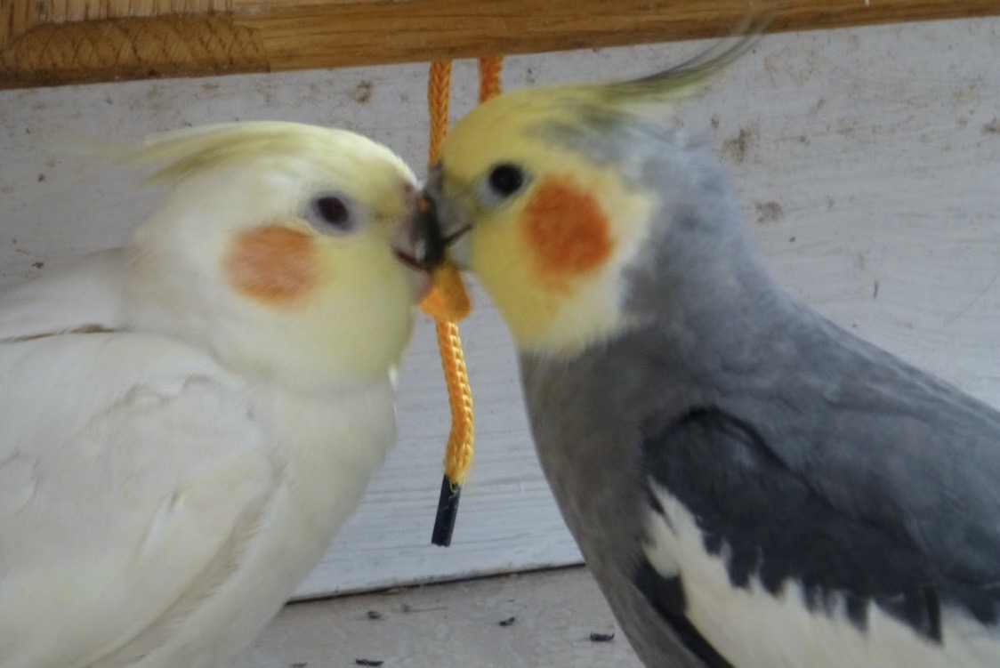
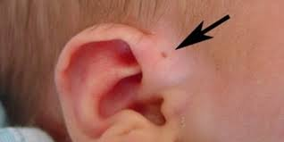

Home Page
Bear is a 3 month old Mini Poodle puppy!
I am Vicky Huang. I joined CFA as an incoming University of Washington freshman because I am eager to learn more about computer science and use the knowledge in my coursework and potential tech careers.

These Cocktiel parrots have been living with me for over 10 years!

I am born in Seattle, Washington. I have been living in Seattle for 18 years!

FUN FACT: I was genetically born with a preauricular pit on my right ear. Only 0.1% to 0.9% of Americans have this!